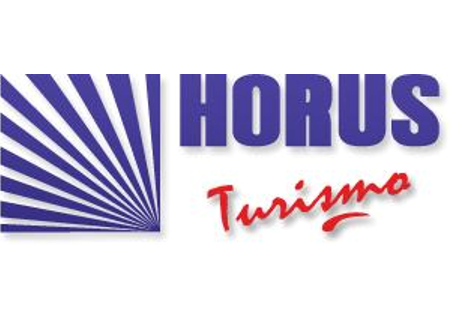

PURMATUR
Viajes personalizados
Detalles
Agencia reconocida por su atención personalizada y conocimiento del destino.
📍 Excursiones en Jujuy, paquetes a medida
✉️ info@purmatur.tur.ar
Viajes personalizados
Agencia reconocida por su atención personalizada y conocimiento del destino.
📍 Excursiones en Jujuy, paquetes a medida
✉️ info@purmatur.tur.ar
Turismo regional
Organiza excursiones a destinos icónicos como Salinas Grandes y Purmamarca.
📍 Cultura andina, paisajes y experiencias locales
✉️ consultas@aramiviajes.com

Excursiones guiadas
Agencia enfocada en recorridos por la Quebrada de Humahuaca y Salinas Grandes.
📍 Turismo cultural y natural con guías locales
✉️ info@horusturismo.com